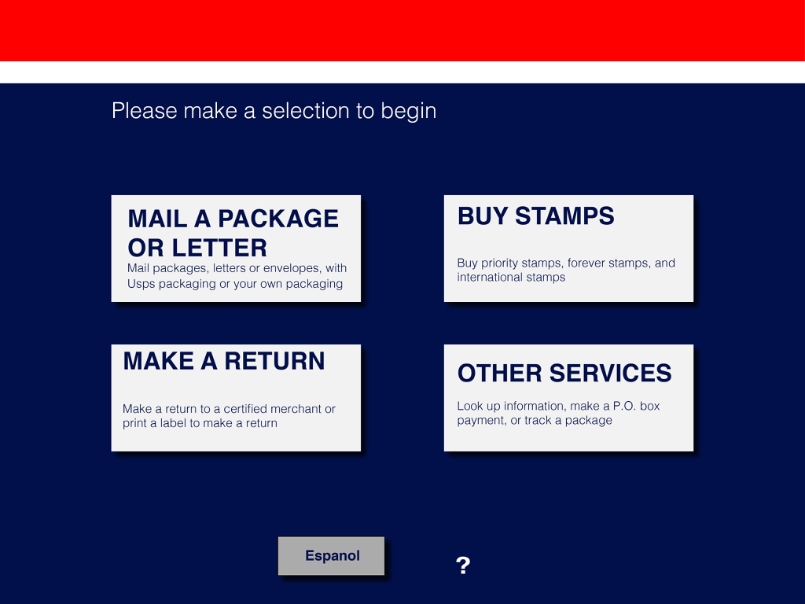

Interface Redesign Project
Case Study
Things you can do at the kiosk:
- Mail a package or letter
- Buy stamps
- Return a package
- Make a PO box payment
- Track a package
- Look up Information
Peope who wants to use the interface
- Someone who has used the kiosk before and ships packages often
- Someone avoiding the line at the counter
- Someone who does not want to interact with a USPS worker
Peope who does not want use the interface
- Someone who has a specific question or circumstance and wants to talk to a worker
- Someone who does not know where there situation would fit into the kiosk categories
- Someone whofinds the kiosk intimidating
Interface problems I identified
- Finding out what type of packaging I am using and how to input that into the kiosk
- Figurign out what type of shipping I want to use for my situation and how much it costs and when it will be delivered
Larger pictures to differentiate the different types of packaging
- Subtext for navigation
- Consolidating certain screens
- A checkout screen where you can do different delivery options and add ons
Wireframes
Hi-Fi Comps
